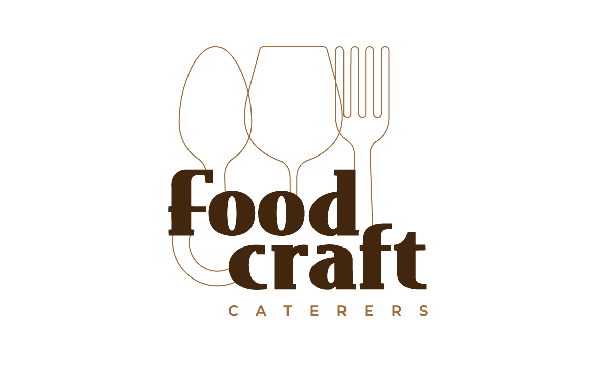

Wedding Celebrations
Pre-wedding functions, ceremonies, receptions and connected multi-day menus.

Plan your eventFoodcraft Caterers · Agra
Premium catering for weddings, receptions, private celebrations and multi-day functions.
Pre-wedding functions, ceremonies, receptions and connected multi-day menus.
Bright, interactive menus with chaat, refreshments, live stations and sweets.
Personalized catering for family occasions, birthdays and milestone gatherings.
Considered menus and polished service for professional gatherings.
Chaat, tandoor, South Indian, pasta, pizza, Thai, dim sum and desserts.
A collaborative approach based on guests, venue, event flow and preferences.
Each service is planned as a full guest journey rather than a collection of unrelated dishes.